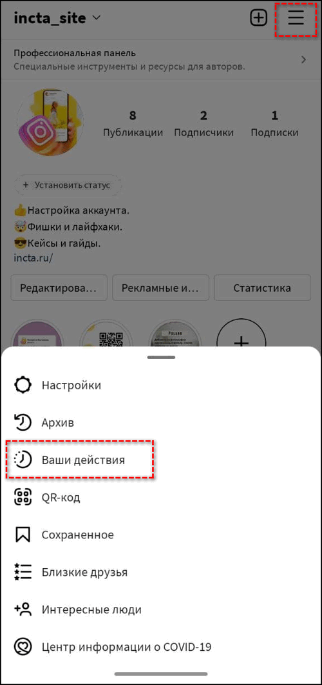
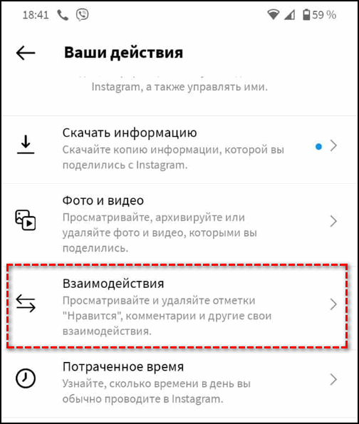
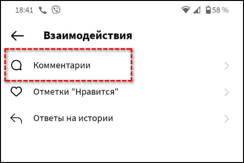
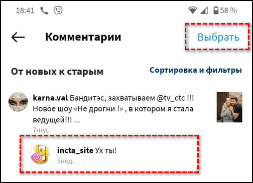
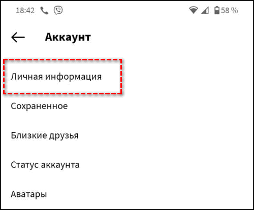
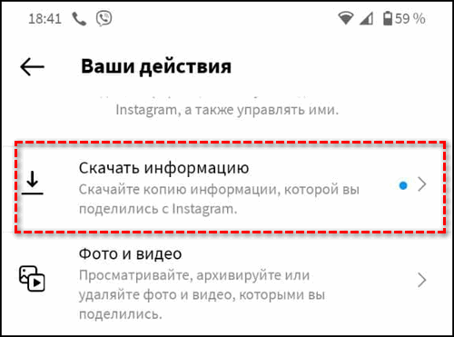
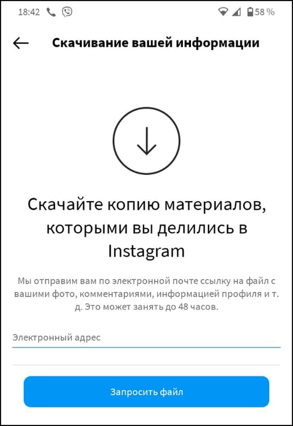
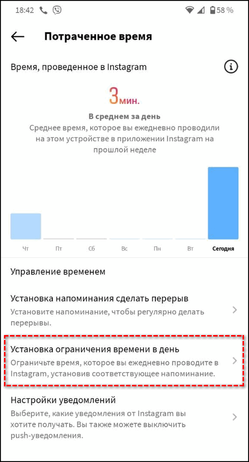
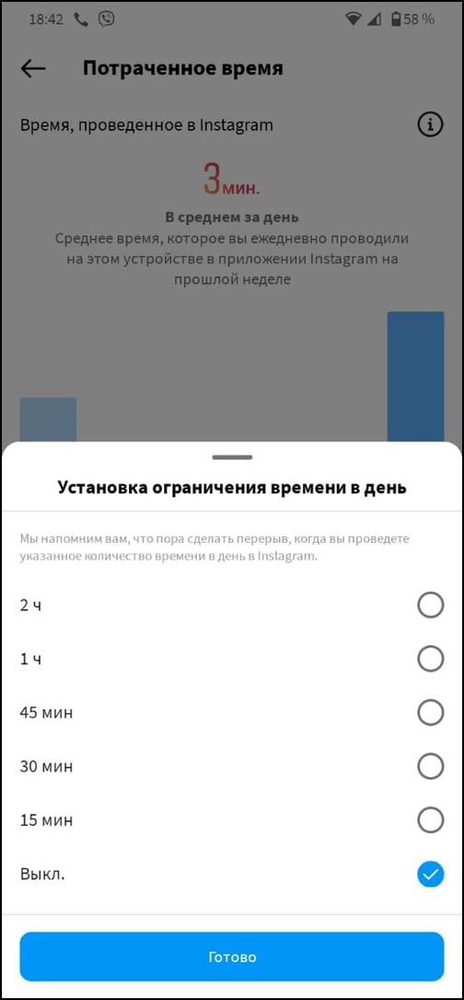
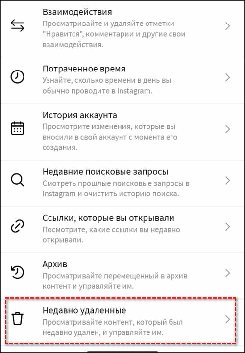

Как удалить лайки и комментарии в Инстаграм через раздел ваши действия

Чтобы удалить свой комментарий в Инстаграме* ранее пользователям приходилось возвращаться к оригинальным постам. С введением раздела: «Ваши действия», можно просматривать свои взаимодействия с другими пользователями, удалять лайки и комментарии за один клик.
Ваши действия в Инстаграме*: разбор пунктов
Раздел - «Ваши действия» был обновлен и кроме «Ежедневной активности» появились пункты:
- взаимодействия. То, как владелец страницы взаимодействовал с контентом других пользователей;
- скачать информацию. Получить все данные о странице по адресу электронной почты;
- архив. Перенесен в раздел: «Мои действия», где можно управлять архивированными постами;
- недавно удаленное. Публикации, которые были удалены владельцем страницы в течение последних 30 дней;
- потраченное время. Сколько в среднем за день пользователь тратит времени на Инстаграм*;
- история аккаунта. Изменения, которые были внесены пользователем за весь срок существования учетной записи;
- открытые ссылки и поисковые запросы. Куда переходил владелец и какие запросы искал.
Через вкладку: «Взаимодействия» можно удалять комментарии и лайки, выбрав их и нажав по кнопке массовой очистки. Но максимальное количество, которое можно убрать – 100. Так как обновление нестабильно, то возможны сбои при удалении первых 10 комментариев и лайков. Это относится к страницам, где владельцы активны и постоянно взаимодействуют с чужим контентом.
Удалить комментарии и лайки за один клик
Можно удалить свой комментарий в Инстаграме* воспользовавшись разделом со взаимодействиями. Не нужно возвращаться к оригинальной записи, чтобы стереть все отзывы: под основным ответом появится: «Показать еще» и таким образом можно открыть всю ветку. Как убрать комментарии и лайки:
- Открыть Инстаграм* – нажать по трем полоскам сверху.
- Ваши действия – Взаимодействия.

- «Мне нравится» или «Комментарии» - нажать по публикации.

- Подождать, пока появится значок выделения.

- Указать другие посты из списка – снизу: «Удалить».

Чтобы удалять комментарии, появится текст и рядом с ним пустой кружочек. С его помощью можно удалить свой ответ. Кроме этого, можно убрать свои ответы на чужие Истории.
Скачать информацию из профиля в Инстаграме*
Скачивание данных необходимо, если пользователю нужно убрать аккаунт или посмотреть сведения, которые не отображаются в приложении. Это может быть - старые комментарии, переписки и прочее. Чтобы воспользоваться такой функцией, нужно подключить адрес электронной почты к странице и подтвердить её. Посмотреть, какой email указан в профиле:
- Зайти в Настройки – Аккаунт.

- Личная информация – первый пункт указывает на подкрепленный адрес электронной почты.
Далее, чтобы получить сведения о своем аккаунте:
- Ваши действия – Скачать данные.

- Подтвердить ранее указанный email – подождать, пока по адресу придет сообщение со ссылкой.
- Перейти по прикрепленному URL – выбрать вариант архивирования данных: ZIP или JSON.

- Открыть архив и посмотреть сохраненные папки.
Среди перечня будут «Комментарии», «Описание страницы» и прочее. Те же сведения можно посмотреть через вкладку: «История страницы», но не скачать на компьютер или смартфон.
Как ограничить время в социальной сети
Кроме того, что можно удалить лайки в Инстаграме*, появилась функция для ограничения времени проведенного в социальной сети. С помощью «Потраченное время» можно посмотреть среднесуточное количество часов или минут, которые проводит пользователь в социальной сети. Также есть таймер на «Перерыв» и «Ограничить».
Как воспользоваться ограничением:
- Ваши действия – Потраченное время.

- Выбрать нужный показатель – Готово.

Как только пользователь достигнет указанного лимита – приложение завершит работу. То же можно установить и через функции смартфона: «Настройки» - Цифровое благополучие – Установить таймер.
Новый архив: восстановить запись
Раздел «Архив» был перенесен в «Ваши действия», где можно посмотреть все архивированные посты и восстановить в своем профиле. Вернуть запись в Ленту:
- Зайти в Инстаграм* – Ваши действия.
- Архив – выбрать категорию: «Публикаций» или «Историй».
- Нажать по записи – сверху три точки.
- Восстановить в профиле.
Публикация появится в Ленте на ту же дату, когда она была впервые опубликована. Через «Архив» Историй можно повторно размещать те же снимки и видео.
Недавно удаленные: как вернуть контент
К недавно удаленным относятся посты, которые были удалены пользователем в последнем 30 дней. Эти записи временно хранятся, а после будут безвозвратно убраны из социальной сети. Как восстановить контент:
- Зайти в «Ваши действия» - последний пункт: «Недавно удаленные».
- Выбрать публикацию – открыть.

- Сверху три точки – Восстановить в профиле.
Под каждой записью расположен счетчик, который показывает срок до удаления. Даже в случае, если осталось несколько дней, можно вернуть публикацию на страницу.